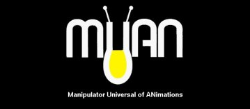
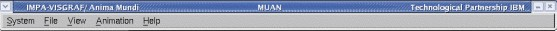
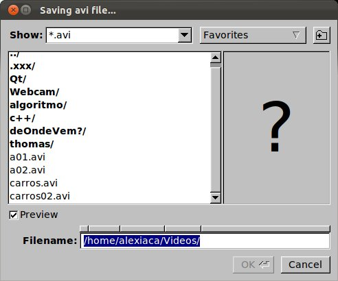
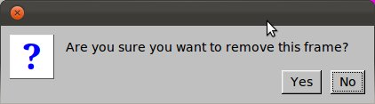
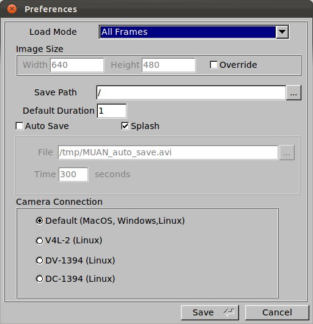
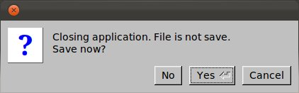

|
 |
|
User Manual |
MUAN is an important tool to construct frame-by-frame animations. Through a video camera accomplished to the computer, MUAN receives the images that will be compose the animation. The basic principle of creating an animation with MUAN starts with the user capturing images. The incomming image from camera (that can be captured) is viewed in the Image Panel. Once a lot of images have been captured, generating an animation, user is able to play or edit it. Finally, the animation might be saved in any of the available formats and it can be loaded by the user when desired.
The image below shows the user interface of MUAN_OS. It is composed by 5 windows: Menu Window, Capture Window, Information Window, Main Toolbar and Navigation Toolbar.
Click on an element to see its description.
| Available Operations |
Menu System
Menu File
Menu View
Menu Animation
Menu Help
| Elements Description |
This is the main window of the application and it has the operation menu. The application terminates when this window is closed.


This window contains the Image Panel where images and animations are shown.
|
Important: The window title bar shows the name and path of the current file. Tooltip: When the filename has an * it means that the file are not saved with the latest updates.
|

This window shows informations about the current animation: current capture number, current capture duration, current frame position, total captures number, total frames number.
It can be visible or not according to the View - Information Window choice menu.

It contains elements for manipulation, edition and visualization of the current animation such as tools that allow capture images, set duration of frames, work within frame range, flip and view animation in loop and/or fullscreen.
It can be visible or not according to View - Toolbars - Main Toolbar choice menu.

Allows navigation over animation frames: going to first, previous, next or last frame or playing/pause animation.
It can be visible or not according to View - Toolbars - Navigation Toolbar choice menu.


Alternate between
Memory or Camera Mode, defining if the images shown on Image Panel are
comming from the camera (Camera Mode) or from the created animation
(Memory Mode).
Shortcut: CTRL+/
Important: If camera is not connected to computer or is turned off then application shows a message and sets the Memory Mode.

Creates a new "empty" animation (having only the First Frame), closing the current one.
Shortcut: CTRL+N
Tooltip: Before close the current animation, application asks to save it if it isn't.

Loads an animation or image (ras or jpg) already saved in computer.
Shortcut: CTRL+G
 |
 |
Important: The file loaded will be inserted in the current position of the animation in use.

Inserts a file (animation or image) in the current animation.
Shortcut: CTRL+I
Important: The animation or image selected will be inserted at the current frame position.

Saves the current animation in AVI video format.
Shortcut: CTRL+S
|  |
Important: MUAN stores information about the frame duration in the file saved. So, this information can be used when loading the file. For more details about this, read "Preferences - Load Mode". |

Saves the current file with a different name.
Shortcut: SHIFT+CTRL+S
|
Important: MUAN stores information about the frame duration in the file saved. So, this information can be used when loading the file. For more details about this, read "Preferences - Load Mode". |

Exports the current animation to a new format. Available formats:
Shortcut: CTRL+E
Important: In the Export Dialog, inform the filename with the desired extension (format). E.g.: test.mpg defines that the file will be saved in mpeg1 format.

Inserts in the current animation all jpg images from a directory using alfa-numeric filename sequence.
Shortcut: CTRL+M

Capture the current image received from camera and insert it in the animation at the next position from the current.
Shortcut: \
Start playing the animation.
Shortcut: CTRL+ENTER
Important: The application will be set in Memory Mode automatically.

Stop playing the animation.
Shortcut: PAUSE
Important: This functionality only applies if the application is playing an animation.

Menu Animation - Go to - First Frame
Go to the first captured image of animation and show it in Image Panel.
Shortcut: HOME
Important: The application will be set in Memory Mode automatically.

Menu Animation - Go to - Previous Frame
Back to the previous captured image of animation and show it in Image Panel.
Shortcut: <
Important: The application will be set in Memory Mode automatically.

Menu Animation - Go to Next Frame
Increments the current frame's position by 1.
Shortcut: >
Important: The application will be set in Memory Mode automatically.

Menu Animation - Go to - Last Frame
Go to the last captured image of animation and show it in Image Panel.
Shortcut: END
Important: The application will be set in Memory Mode automatically.

Menu Animation - Go to - Capture Number
Asks the user for a new current position in the animation and refreshes image panel.
Important: The application will be set in Memory Mode automatically.

Removes the current frame, but only applies if application is in Memory Mode and the user confirms the operation. An animation always has at least one frame. So, when removing a frame that is the last one, automatically the First Frame will be inserted in the animation.
Shortcut: DELETE
|  |
Important: In the Confirm Dialog, the key ENTER will confirm the operation and the key ESC will cancel it, independent of the button in focus. The button in focus can be executed using the space bar on the keyboard. |

Removes all frames of the animation, asking to confirm the operation.
Shortcut: SHIFT+DELETE
|
Important: In the Confirm Dialog, the key ENTER will confirm the operation and the key ESC will cancel it, independent of the button in focus. The button in focus can be executed using the space bar on the keyboard. |

Central panel of MUAN where images are shown. It functions in two modes:

In Camera mode, defines the
duration of the frame that will be captured. As exemple, defining 2 in
the Frame Duration Edit Text means that the next frame to be captured
will take the time of 2 frames when playing the animation.
In Memory mode, changes the duration of the current frame (shown in the
Image Panel). To do this, type the desired value and then type
ENTER.
When is turned on, defines a sequence of frames that are used at Play or Delete operation. The beginning and the end of this range must be specified in the Begin and End Fields, respectively.
Shortcut: CTRL+R

Defines the beginning position when using Range. When is left empty it means that the first frame will be used as the beginning of the range.
Tip: In Memory Mode, uses the Begin Button to select the current frame as the beginning of the range.

Defines the end position when using Range. When is left empty it means that the last frame will be used as the end of the range.
Tip: In Memory Mode, uses the End Button to select the current frame as the end of the range.

Turns on/off the option of continuous playing. That is, when is turned on application plays the animation restarting every time that it ends.
Shortcut: CTRL+L

Turns on/off the Flip Operation. Flip alternates between the last captured image and the current incomming image (from camera). It is possible to control the speed of this swap through the slider.
Shortcut: CTRL+F
Important: If the application is playing an animation and Flip is turned on then it stops the execution of the animation.

Indicates the number (position) of the current image on Image Panel.
Current Capture Duration Text Display
Indicates the duration of the current frame.
Indicates the number of the current frame. This number is calculated according to the previous frames duration.
Tip: In the case that application is in Memory Mode, then the current frame can be shown in the Image Panel.
Indicates the total of captured images in the animation.
Indicates the total of frames in
the animation.
This number is calculated according to the duration of all images
captured.
Shows messages of system state, like saving animation and camera off.

Shows the Image Panel covering the whole screen. To restore the normal view, press ESC.
Shortcut: ALT+ENTER
Shows the About window which has informations about MUAN development.

Opens a browser showing this user manual.
Show the Preferences Window where user can set the application parameters.
|  |  |
Exits application, asking to
save animation if it is not.
Shortcut: ESC
|  |
No:
Exit application whitout saving. |
| Concept and Application |
System Development |
Technological Partnership |